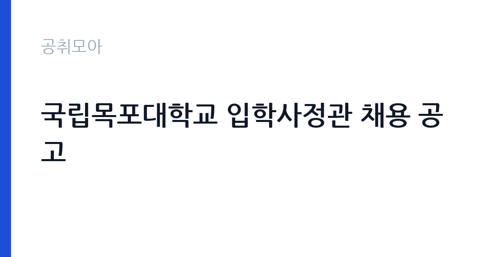

[국가기관] 국립목포대학교 입학사정관 채용 공고
목포대학교 · 광주 · 마감 2026-10-15 (D-11) · 출처 나라일터

한눈에 보는 모집 조건
| 기관 | 목포대학교 |
|---|---|
| 공고명 | 국립목포대학교 입학사정관 채용 공고 |
| 고용형태 | 정규직 |
| 근무지 | 광주 |
| 게시일 | 2026-10-02 |
| 마감일 | 2026-10-15 (D-11) |
지원자격, 이렇게 읽으세요
- 입학사정관 2명
- 접수 ~2026-10-15 마감
- 세부 조건은 원문 공고문 확인
모집 인원은 입학사정관 2명이며 세부 지원자격과 우대 조건은 원문 공고문에서 확인하셔야 합니다. 일반적으로 국립대 입학사정관은 학사 학위 이상 소지자를 대상으로 하며, 입시 평가나 고교·대학 교육 관련 경력이 있으면 우대받는 구조입니다. 입학사정관 직무는 지원자 서류 평가와 면접 평가, 전형 기획과 연구, 입시 홍보 업무를 포괄하므로 관련 경험이 중요합니다. 전공 제한이나 경력 연수 같은 세부 조건이 원문에 명시되어 있으니 반드시 대조하십시오. 경력증명서와 학위증명서 등 증빙 서류를 미리 발급받아 두시는 것이 좋습니다.
이 공고의 포인트
이 공고의 매력은 국립대가 입학사정관을 한 번에 2명 채용한다는 점입니다. 사정관 채용은 보통 1명씩 소규모로 나는 경우가 많아 2명 모집은 합격 가능성을 높이는 요소입니다. 입학사정관은 매년 반복되는 대입 전형 수요 덕분에 경력이 쌓이면 이직 시장에서도 가치가 있는 직무입니다. 목포대학교는 전남 지역 거점 국립대학으로, 지역 인재 선발과 전형 연구라는 명확한 미션이 있어 업무 보람도 기대할 수 있습니다. 교육 분야 커리어를 이어가고 싶은 분께 좋은 기회입니다.
전형은 어떻게 진행되나
원서 접수 마감은 2026년 10월 15일이며 세부 전형 단계는 원문 공고문에서 확인하셔야 합니다. 국립대 계약직 채용은 통상 서류 심사와 면접으로 진행됩니다. 입학사정관 전형에서는 서류 평가 경험이나 입시 관련 이해도를 묻는 질문이 나올 수 있으니 관련 경험을 정리해 두십시오. 접수 방법이 방문인지 우편인지 온라인인지 원문에서 확인하고, 마감일 혼잡을 피해 여유 있게 제출하십시오.
이런 분께 추천해요
- 입학사정관이나 입시 관련 업무 경험이 있어 바로 평가 업무에 투입될 수 있는 분께 가장 적합합니다.
- 교육학이나 관련 전공을 살려 대학 입학 업무 커리어를 시작하고 싶은 분께 추천합니다.
- 광주·전남권 거주 중 국립대 소속 안정적인 일자리를 찾는 분께 잘 맞습니다.
지원 전 체크리스트
- 지원자격의 세부 조건과 우대 사항을 원문 공고문에서 정확히 대조하십시오.
- 접수 방법과 제출 서류 목록을 확인하고 증빙 서류를 미리 발급받으십시오.
- 마감일인 10월 15일에 임박해 제출하지 말고 여유 있게 접수하십시오.
- 계약 기간과 갱신 조건, 근무 부서를 원문에서 확인하십시오.
모집 일정과 제출 타이밍
원서 접수 마감일은 2026년 10월 15일입니다. 증빙 서류 발급에 시간이 걸릴 수 있으니 늦어도 10월 8일 전에는 준비를 시작하시는 것이 안전합니다. 서류 심사와 면접 일정은 원문 공고문에 안내되어 있으니 원문에서 확인하십시오. 대입 전형 일정과 맞물려 채용 절차가 비교적 빠르게 진행될 수 있으므로 접수 후 연락을 놓치지 마십시오.
직무 이해하기: 국가기관
입학사정관은 대입 전형의 서류 평가와 면접 평가를 전담하는 전문가입니다. 지원자의 학교생활기록부와 자기소개서를 평가하고, 면접 평가에 참여하며, 전형 기획과 제도 연구, 고교 방문과 입시 홍보 같은 업무도 맡습니다. 데이터 분석과 제도 연구 비중도 있어 문서 작성과 분석 능력이 요구됩니다. 국립목포대학교 입학처 소속으로 근무하게 되며, 구체적인 담당 업무와 근무 부서는 원문 공고문에서 확인하십시오.
자기소개서 작성 팁
지원서에는 입시 평가나 교육 관련 경험을 구체적으로 적으십시오. 서류 평가 참여 경험, 입시 상담이나 진로 지도 경험, 교육 관련 연구나 프로젝트 참여 사례가 있다면 포함하십시오. 공정성과 윤리 의식은 입학사정관의 핵심 자질이므로 관련 인식을 보여주는 문장을 넣는 것이 좋습니다. 목포대학교의 지역 거점 역할과 인재상에 대한 이해를 지원 동기와 연결하면 설득력이 높아집니다. 분량은 간결하게 핵심 위주로 정리하십시오.
면접 준비 포인트
면접에서는 입시 평가의 공정성과 관련된 질문이 나올 가능성이 높습니다. 평가 기준을 어떻게 세우는지, 이해관계 상황에서 어떻게 대처할지에 대한 질문에 대비하십시오. 최근 대입 전형 동향과 목포대학교의 전형 구조를 미리 파악해 가시면 좋은 인상을 줄 수 있습니다. 고교 현장이나 학부모 응대 경험도 물을 수 있으니 관련 사례를 준비하십시오. 면접 복장은 단정하게 갖추시는 것이 기본입니다.
급여·근무조건 읽는 법
이 공고 원문에 보수 조건이 별도로 안내되어 있으니 정확한 금액은 원문 공고문에서 확인하셔야 합니다. 참고로 타 대학 입학사정관 공고 사례를 보면 학사나 석사 학위 소지자 기준 연 3,400만 원에서 3,500만 원 내외가 제시되는 경우가 많으며, 박사 학위 소지자는 4,300만 원 내외가 제시된 사례도 있습니다. 다만 이는 다른 대학의 사례이므로 국립목포대학교의 실제 보수와는 다를 수 있습니다. 기본급과 제수당, 퇴직금 포함 여부를 구분해 원문 기준으로 확인하십시오.
자주 묻는 질문
- 입학사정관은 어떤 일을 하나요?
대입 지원자의 서류와 면접을 평가하고 전형을 기획·연구하며 입시 홍보 업무를 맡는 전문가입니다. 매년 반복되는 대입 수요가 있어 경력 가치가 있는 직무입니다. - 지원자격은 어떻게 되나요?
세부 자격은 원문 공고문에 안내되어 있으며 일반적으로 학사 학위 이상과 관련 경력이 기준이 됩니다. 원문에서 직접 대조하십시오. - 계약직인가요?
계약 기간과 갱신 조건은 원문 공고문에 명시되어 있습니다. 대학 입학사정관은 통상 기간제 계약 형태로 채용되며 평가에 따라 재계약이 이루어집니다.
함께 보면 좋은 공고
[국가기관] 한국방송통신대학교 대구경북지역대학 청사관리직(미화방호) 채용공고(무기계약직(기간제계약직)) — 마감 2026-10-15[국가기관] 국립창원대학교 입학과 기간제근로자(입학사정관) 채용 공고 — 마감 2026-10-12[국가기관] 2026년 인제경찰서 무기계약(보일러 등 시설관리) 근로자 채용 재공고 — 마감 2026-10-08출처: 나라일터 공개정보를 바탕으로 공취모아가 정리한 안내글입니다. 모집 조건·일정은 변경될 수 있으니 지원 전 반드시 원문 공고문을 확인하세요. 본 글은 정보 제공용이며 합격을 보장하지 않습니다.